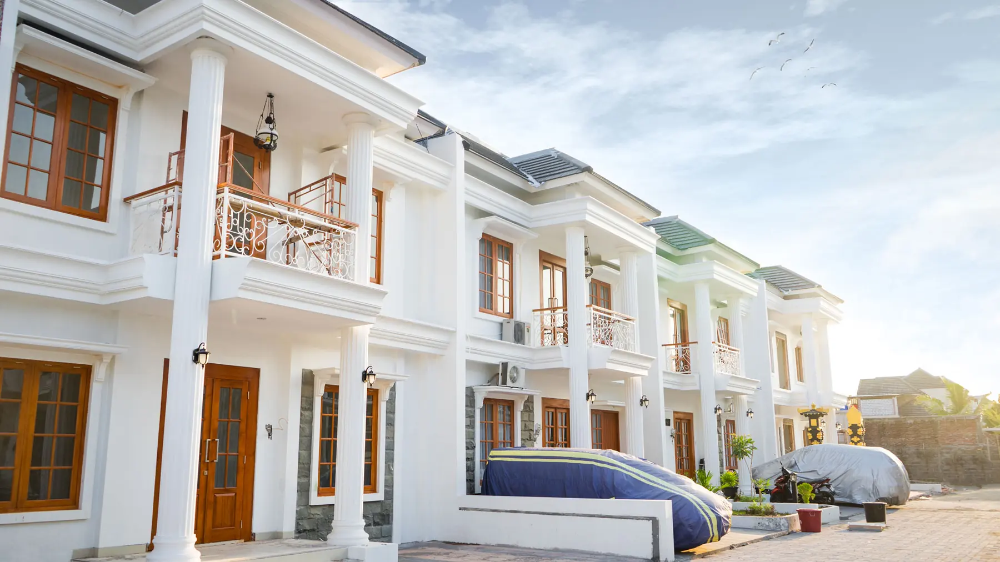
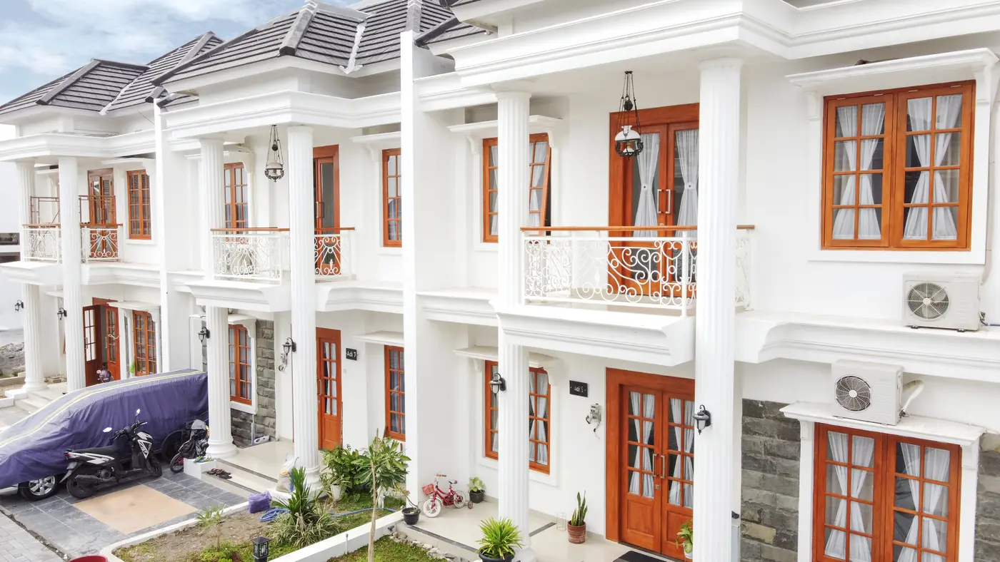
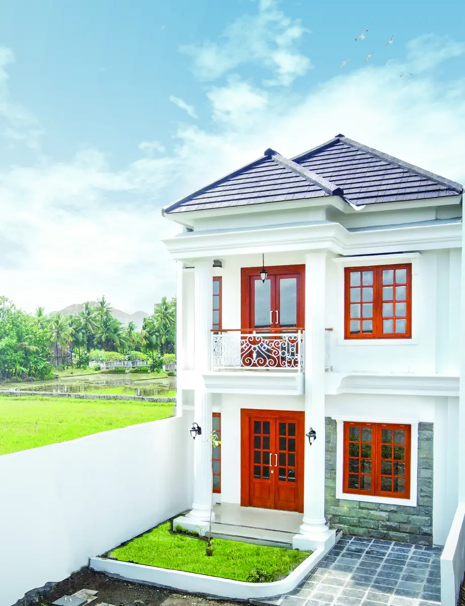
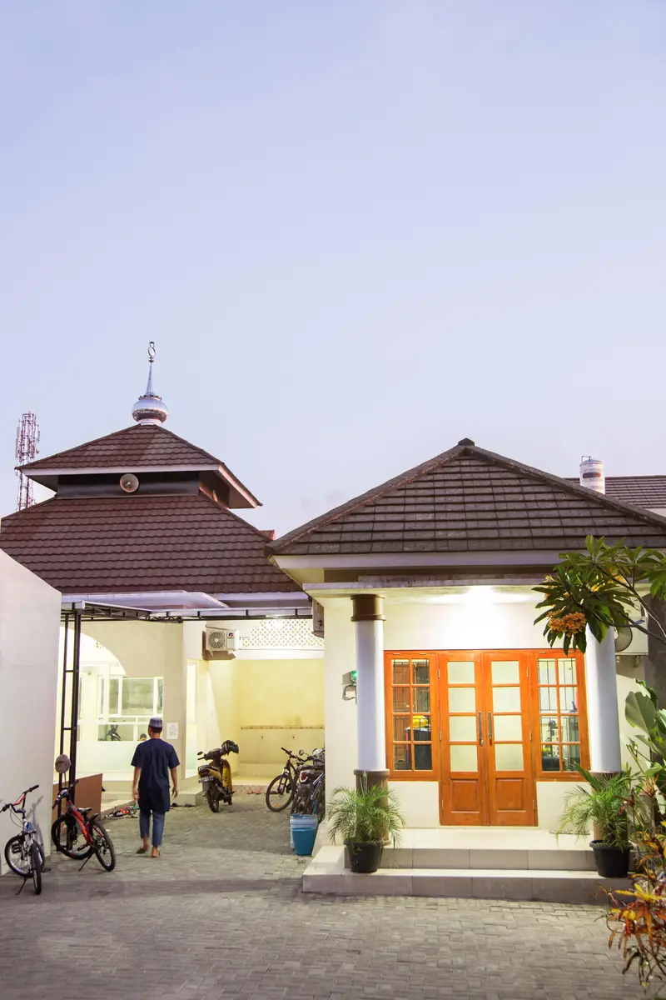
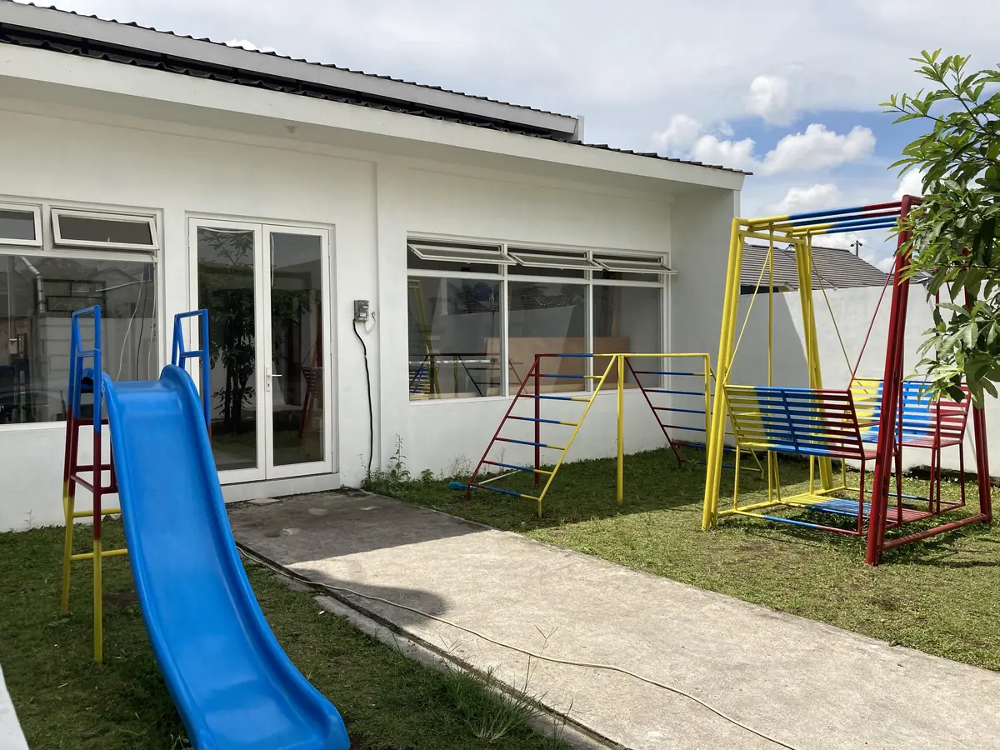
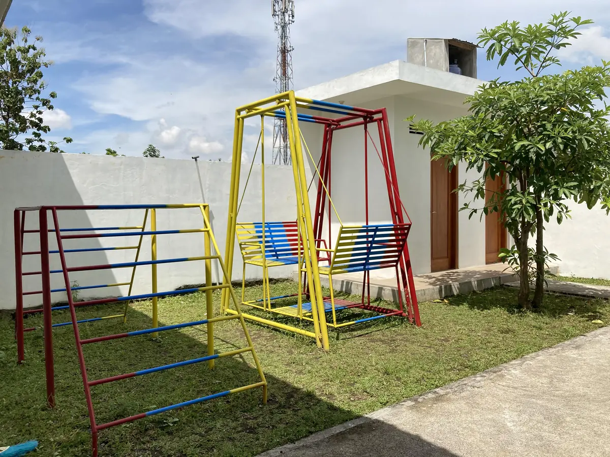

Royal Mansion
205 rumah dibangun, dan seluruhnya kini dihuni. Cluster terakhirnya, Adiluhung, adalah yang pertama kami dokumentasikan hari demi hari.
Sembilan tahun,
tiga cluster.
Royal Mansion adalah proyek terbesar JGS Group sebelum era Kawa dan Tentrem — 205 rumah, dibangun bertahap dari 2013 sampai 2022 di Jl. Pleret KM 2,2, Bintaran, Jambidan, Banguntapan, Bantul. Kawasannya terbagi tiga: Tahap 1, Tahap 2, dan Adiluhung.
Nama Adiluhung yang kini dipakai sebagai nama tipe berasal dari cluster penutupnya. Foto serah terima di halaman ini diambil di cluster tersebut, saat kami mulai membiasakan diri memotret setiap serah terima — kebiasaan yang sekarang berlaku di semua proyek.
Rumah klasik dua lantai,
dan fasilitas kawasannya.
Masjid, kids club, dan playground di dalam kawasan — dibangun untuk 205 keluarga yang kini menempatinya.





Rumah-rumahnya,
dan pemiliknya.
Kami punya 20 foto serah terima dari Royal Mansion — semuanya dari cluster Adiluhung. Dokumentasi foto baru kami lakukan rutin sejak cluster itu, jadi Tahap 1 dan Tahap 2 belum terwakili di sini. Kami tulis apa adanya, bukan supaya terlihat lebih kecil, tapi supaya angkanya jujur.


{kind=link}
{kind=link}
{kind=link}
{kind=link}
{kind=link}
Royal Mansion sudah habis.
Mencari rumah dua lantai seperti ini? Tipe Andrawina di Tentrem Bhumi punya karakter yang paling mendekati.
Foto dipublikasikan atas izin pemilik rumah. Keberatan foto tampil di sini? Hubungi admin kami di 0889-0292-9571.